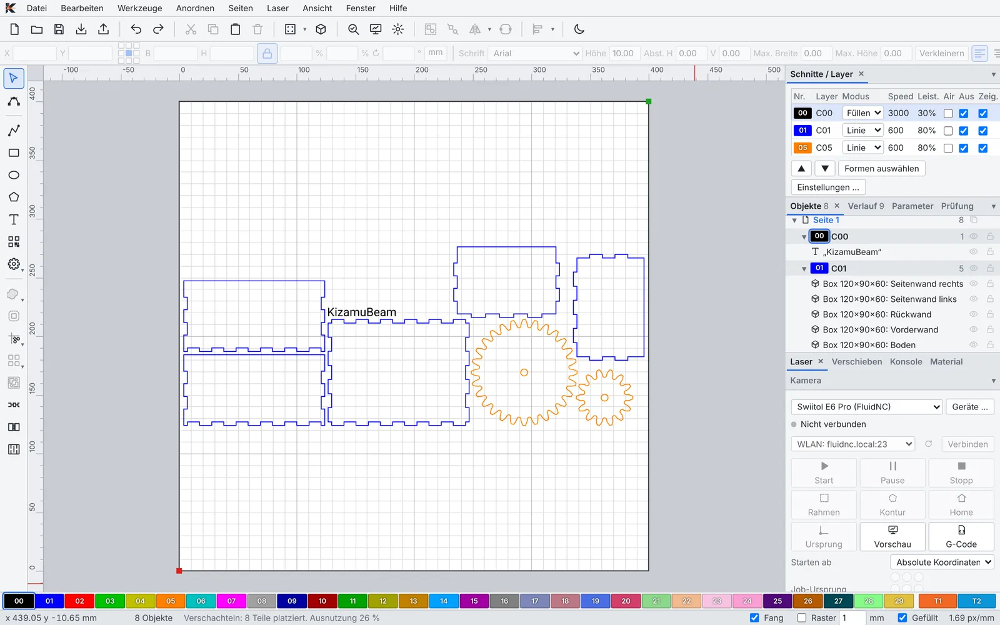
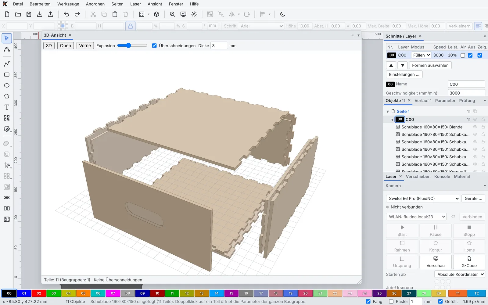
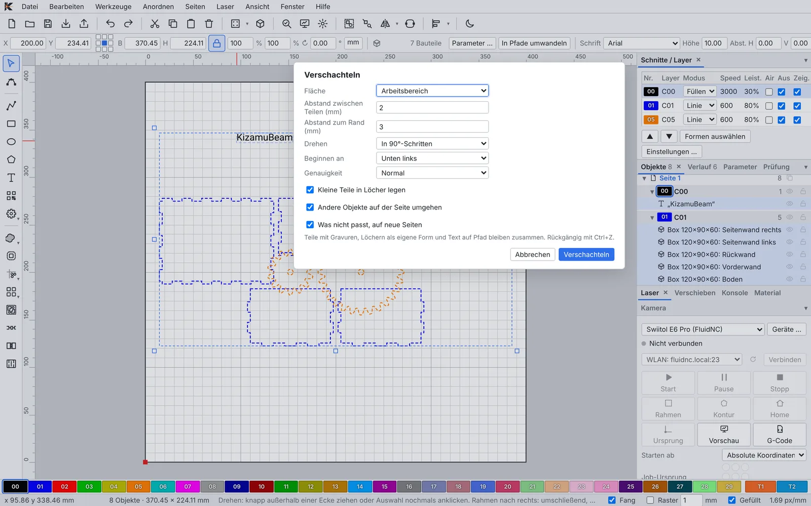
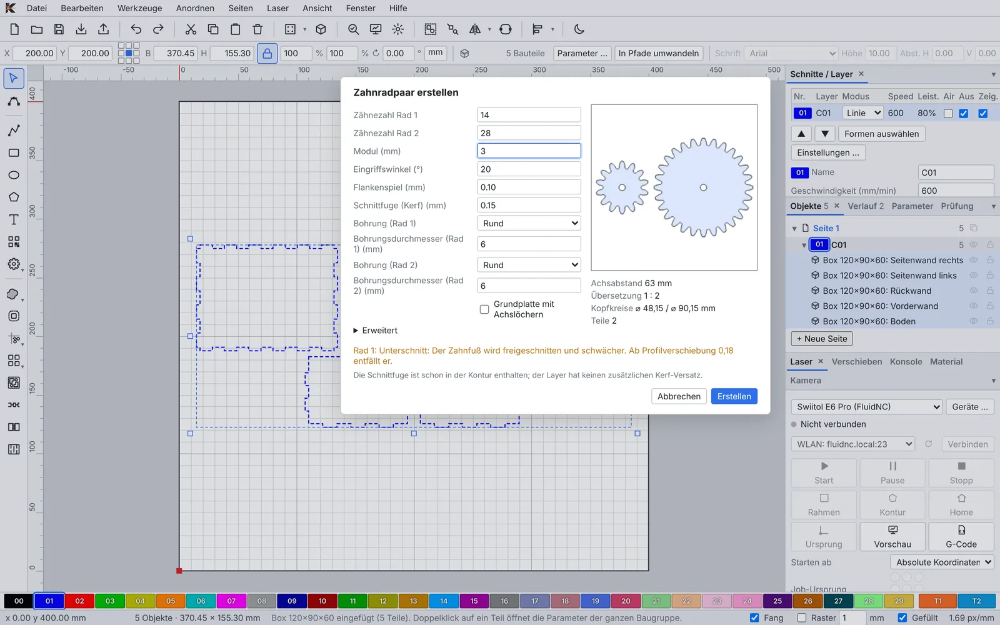
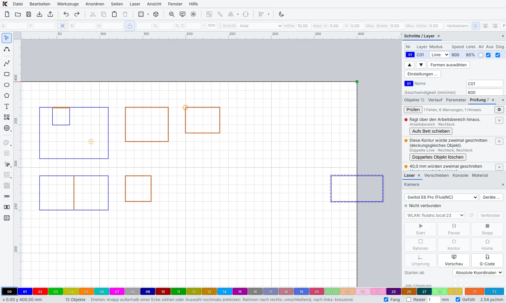

KizamuBeam is open-source software to design, engrave and cut – made for diode lasers running FluidNC, GRBL and friends. Free on macOS, Windows and Linux.
Kizamu (刻む) is Japanese for “to carve, to engrave, to cut finely”.

Costs nothing
No subscription, no license keys, no account. Install and start.
Open for good
GPL-3.0-or-later. The code is on GitHub – contributions welcome.
More than engraving
Boxes, drawers, gears and hinges, generated parametrically – with proper fit and a 3D preview.
Safe at the machine
Setup wizard, work-area check before every job and alarms in plain language.
Features
Everything from idea to finished part
One app for design, image work, part generation and machine control.
Design & edit
Draw, combine, fine-tune – in a layout that feels familiar from the first click.
Lines, Bézier curves, rounded rectangles, ellipses, polygons, stars and multi-line text
Boolean operations, offset, node editing, trimming, and snapping to nodes, midpoints and intersections
Text on a path, welded letters and true outlines from your system fonts
Warp text, shapes and images into an arc, bulge, flag or perspective, as clean Bézier curves
Grid and circular arrays with live preview, multi-page projects and a history you can jump back through
Import SVG, DXF, images and LightBurn projects (.lbrn2) – colors map straight to the matching layer
Dockable windows, customizable toolbars, light and dark theme
Images & engraving
Get photos, logos and artwork onto material the way you pictured them.
Ten image modes, including Floyd-Steinberg, Jarvis, Stucki, halftone, newsprint, sketch and grayscale
Brightness, contrast, gamma, sharpening and denoise with before/after compare and a 1:1 view
The workspace shows the rasterized result at laser resolution
Crop, mask and remove backgrounds locally, trace images into clean Bézier paths
Fill engraving with scan angle, cross-hatch, overscan and bidirectional mode, or offset fill in rings
Camera overlay: calibrate a USB or head-mounted camera, see your material on the workspace and place a design on every detected workpiece automatically
Machine & output
Connect, check, frame, burn – no second program needed.
Five-step laser setup: connect, detect firmware, check settings, test the axes, run a safe test job
USB, Telnet or WebSocket – with live position and plain-language alarms
Preview with time estimate and scrubber; “Start Here” resumes an interrupted job
Work-area check before every job and frame, including the reported work offset
Material test grid with photo evaluation, focus test (ramp or Z series), rotary support (roller or chuck), custom G-code scripts per device
Save G-code or stream it directly – streaming runs in the Rust core
Adjust power and speed during a job; FluidNC: upload jobs to SD card or flash and run them there, edit config.yaml with backups, find the controller on Wi-Fi
Generators & 3D
Enter dimensions, get parts. Double-click, change, everything recalculates.
Finger-jointed boxes, drawers, compartment inserts and slot-together shelves as complete assemblies
Joint tool: finger joints, tab-and-slot, cross-lap, snap-fit and hook joints, wedge tenons, T-slots, lid hinge
Living hinges in seven patterns
Disc sphere: a lamp shade made of round discs with angled slots, 6 to 32 discs, no glue
Layered model: slice an STL or OBJ model into stacked, numbered sheets
3D view with explode slider – collisions show up in red before you waste material, engravings appear on the parts
Material looks in 3D: wood grain, slate, acrylic with refraction, metal – engravings as they will look on the material, also as a mockup with shadows and PNG export for customers
Design check and fit calibration: find and fix thin bridges, open outlines and too-tight slots

Production
From one-off to small batch – name tags, key fobs, labels.
Automatic nesting by true outlines, parts inside holes, overflow onto new pages, scrap pieces as sheets
Templates with project parameters and formulas – key fob, name tag and labelled box included
Series from a table or CSV: every row becomes a finished copy, edit the table right in the dialog
QR codes (link, Wi-Fi, vCard), barcodes (Code 128, EAN, UPC, Code 39, ITF) and variable text with serial numbers, dates and CSV columns
Library with 400 built-in motifs and design elements (animals, plants, holidays, frames, borders, ornaments …) plus room for your own – with previews and search, insert by double-click or drag
Cut settings per layer with sub-layers, perforation, lead-in/lead-out, overcut, power ramp in corners and Z step per pass
Material library for cut and image settings; LightBurn libraries (.clb) can be imported
Toolbox: every generator and tool as a tile, with search in English and German, favorites, recently used tools and templates from extensions

Open & extensible
Free software that grows with you – and talks to your tools.
MCP server for AI agents: read, design, generate parts. Local only, off by default, token-protected
Machine actions from agents only start after you confirm – pause and stop always work
Extensions (.kzp) add device presets, templates, materials and motifs – no app update, data only, no code
Interface in English and German; new languages are easy to add
GPL-3.0-or-later, open JSON file formats, built with Tauri 2, TypeScript and Rust
Formerly “Laserwerk”: settings, devices and materials carry over, old projects still open
A look inside

Gear pair generator with live preview: 14 and 28 teeth, module 3, 63 mm center distance

Design check: errors and warnings with one-click fixes
Hardware
Works with your laser
KizamuBeam talks to the controllers found in most hobby diode and CNC lasers.
Firmware
FluidNC
GRBL 1.1
grblHAL
Marlin
Smoothieware
Connection
USB (serial)
Wi-Fi via Telnet
Wi-Fi via WebSocket
Device presets
Presets for popular machines from Swiitol, Ortur, Atomstack, Sculpfun, xTool, Creality Falcon, Two Trees, Longer and Comgrow – or generic per controller.
Tested day to day on a Swiitol E6 Pro running FluidNC.
Not supported: galvo lasers and Ruida/DSP controllers.
Manufacturer names only identify compatible machines; no affiliation with the manufacturers.
Lasers are not toys: wear eye protection, run your exhaust and stay with the machine.
Frequently asked questions
Is KizamuBeam really free?
Yes. KizamuBeam is licensed GPL-3.0-or-later: no license fee, no subscription, no account – commercial use included.
Will it work with my laser?
If it runs FluidNC, GRBL, grblHAL, Marlin or Smoothieware, very likely – that covers most diode lasers. Galvo lasers and Ruida/DSP controllers are not supported.
Why does my computer warn me when I install it?
The installers aren’t code-signed yet, which is common for young open-source projects. On macOS: System Settings → Privacy & Security → “Open Anyway”; on Windows: “More info” → “Run anyway”.
Can I bring my existing material settings?
Yes. LightBurn material libraries (.clb) can be imported where fields have an equivalent. LightBurn projects (.lbrn2) open with their shapes, images and layer settings. Laserwerk projects and libraries open directly, and SVG and DXF import as usual.
Is the beta stable enough for real projects?
For most work, yes – it’s used on real hardware every day. A few new features are still untested (see the note above). Back up important projects and check new jobs with preview and frame.
What’s the MCP server about?
It lets AI agents read and edit your designs. It’s off by default, local only and token-protected, and nothing reaches your machine without your confirmation in KizamuBeam.
How can I help?
Try the beta on your laser, report bugs and ideas on GitHub, translate the interface into your language, or send a pull request.